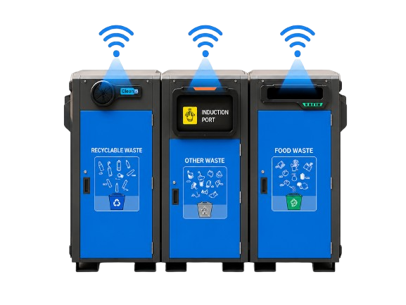

Official Adama City Government Service
Waste Collection
FOR ADAMA CITY
Request collection or report a waste problem to the Adama City sanitation team.
Official Adama City Government Service
Request collection or report a waste problem to the Adama City sanitation team.
Loading live service statistics…
From your report to a collection update, each step has a clear role.

Step 1. Resident reports waste
Community reporting
Residents identify a waste problem and submit a report with its location and optional photo.
Sensor readings can report fill levels for connected bins; readings may be unavailable when a device is offline or stale.
Location coordinates help the sanitation team and drivers find reported issues and assigned collection tasks.
Report overflowing, damaged, missing, or other problem bins and share details with the sanitation team.
Report an issueAdmins assign work and drivers update task status, helping the team follow each request through its workflow.
Request collectionSubmit a collection request for your location without creating an account.
Your request is reviewed by an administrator before it is assigned for collection.

Report overflowing or damaged bins directly to the sanitation team in seconds.
Contact the sanitation team for help with waste collection services.
Walk through a cleaner, greener and smarter city environment supported by reliable collection services and backed by Adama City Administration.
Every citizen can request collection, report issues, and take part in building a healthier urban future — one smart action at a time.
Request Collection
Take control of your urban environment. Available on iOS and Android.
Reports are not anonymous: the form requests your name, phone number, location, and issue details. Photos are optional. The privacy policy explains how submitted information is used.
Read the Privacy PolicyNo account is required to submit a waste report or collection request.
No. The report form requires your name, phone number, and location. A photo is optional.
The sanitation team reviews the report. An administrator can assign it to a driver, who updates the task as work progresses.
No. Only connected sensors can provide readings, and a reading may be marked stale or unavailable if the device is offline.
Active Bin Locations
City Zones Covered
Citizens Served Daily
Report Resolution Rate
What we aim to achieve for Adama City and its citizens
Provide every citizen with easy access to garbage disposal location information across all city zones.
Improve waste collection efficiency by using real-time reporting and smart scheduling systems.
Maintain a clean, healthy, and sustainable urban environment for all residents of Adama City.
Empower city administration with waste data analytics for better urban planning and resource allocation.
Learn more about Adama City's smart development initiatives
Developed under the Adama City Administration Waste Management Initiative
Adama City Administration
ManagementSpatial Data & Mapping Team
DevelopmentWaste Management Division
OperationsSubmit a public collection request for your location or report a waste problem.